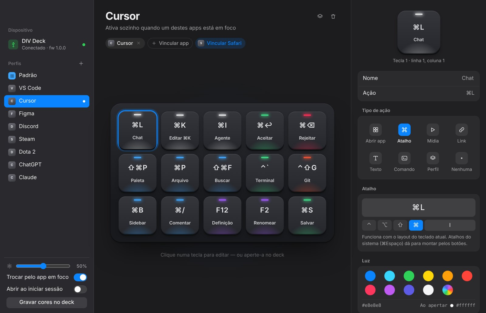

Abra apps, dispare atalhos, controle a música e digite prompts com um toque. O deck muda sozinho conforme o app em que você está.
Você chegou aqui pelo QR code da caixa? Ótimo. São quatro passos.
Ligue o DIV Deck no computador com o cabo USB. As teclas respiram devagar: ele já funciona sozinho.
Baixe o instalador do seu sistema aqui embaixo e abra.
Para enviar atalhos, o app pede acesso. No Mac é a Acessibilidade; o próprio app abre a tela certa.
Já vem com perfis para VS Code, Cursor, Figma, Discord, Steam, Dota 2, ChatGPT e Claude.
Se o macOS disser que não pode verificar o app: clique com o botão direito em DIV Deck › Abrir › Abrir. Só na primeira vez. Depois: Ajustes › Privacidade e Segurança › Acessibilidade › ative DIV Deck.
Se aparecer “O Windows protegeu o computador”: clique em Mais informações › Executar assim mesmo. O deck é detectado automaticamente pela porta USB.
Um app leve que mora na barra de menus e transforma cada tecla no que você precisar.
Abriu o Figma? O deck vira Figma. Voltou ao código? Vira VS Code. Sem trocar nada à mão.
Grave apertando as teclas. Combine com abrir apps, links, comandos de terminal e textos prontos.
LED RGB em cada tecla, com prévia ao vivo. As cores ficam salvas no deck mesmo sem o app.
Play, pausa, próxima, volume e mudo em qualquer app — como as teclas do seu teclado.
Perfis de ChatGPT e Claude com prompts prontos: explicar, revisar, testes, commit, resumo.
Switches MX com sockets hot-swap: troque switches e keycaps sem solda. Faces da caixa intercambiáveis.

Funcionam desde o primeiro minuto. Edite, duplique ou crie os seus.
Grátis, para sempre. Atualizações aparecem aqui.
Use um cabo USB de dados (alguns cabos só carregam). No Mac, o chip USB costuma funcionar sem driver; se não, instale o driver CP210x. Feche outros programas que estejam usando a porta serial (Arduino IDE, monitor serial).
Falta a permissão de Acessibilidade. Em Ajustes › Privacidade e Segurança › Acessibilidade, remova DIV Deck com “–”, adicione de novo com “+” e ative. Isso também resolve depois de atualizar o app.
Ative “Trocar pelo app em foco” na barra lateral e confira se o app está vinculado ao perfil (botão “Vincular app”). Enquanto a janela do DIV Deck está em foco o perfil não muda — de propósito, para você editar em paz.
Clique em “Gravar cores no deck”. Assim ele guarda as cores e continua aceso, respirando, mesmo sem o computador conectado ao app.
Sim. As teclas usam sockets hot-swap para switches MX de 3 e 5 pinos: puxe com um extrator e encaixe o novo. Keycaps MX padrão servem.